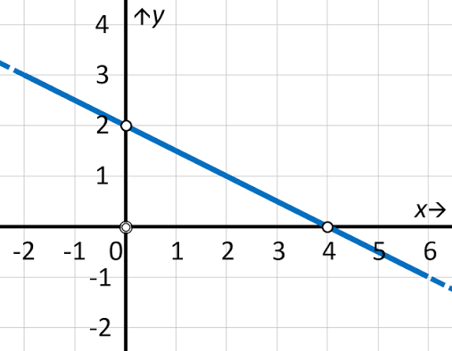
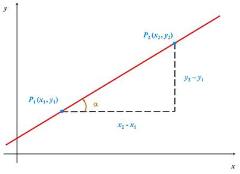
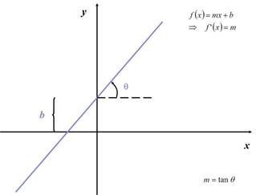
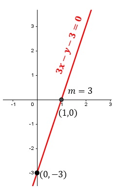
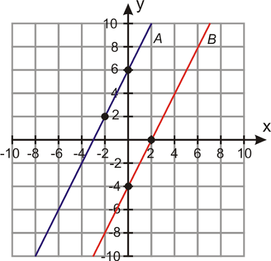
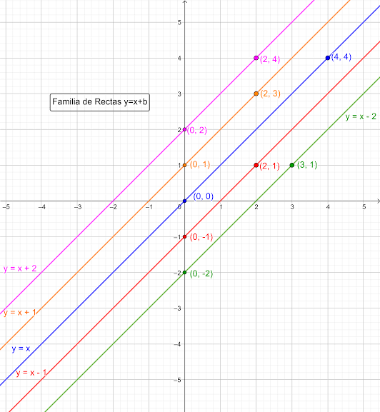
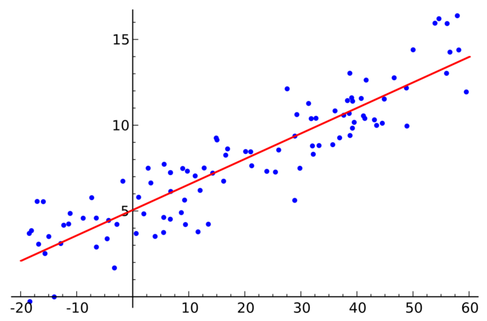

Recta
Línea formada por infinitos puntos que se extiende en ambas direcciones sin principio ni fin. Ejemplo: el borde recto de una regla.

Línea formada por infinitos puntos que se extiende en ambas direcciones sin principio ni fin. Ejemplo: el borde recto de una regla.

Indica qué tan inclinada está una recta y si sube o baja. Fórmula: m = (y2 − y1) / (x2 − x1).

Punto donde la recta cruza el eje Y. En la ecuación y = mx + b, la b representa la ordenada al origen.

Representa una recta mediante Ax + By + C = 0, donde A, B y C son constantes y A y B no pueden ser ambos cero.

Representación de una recta en el plano cartesiano, formada por puntos que siguen una misma dirección. Ejemplo: trayectoria de un automóvil en una carretera recta.

Conjunto de rectas que comparten una característica, como pasar por un mismo punto o tener la misma pendiente.

Método que permite encontrar una recta que representa la relación entre dos variables y ayuda a hacer predicciones. Ejemplo: estimar cuánto gastará una persona según la cantidad de productos que compra.
